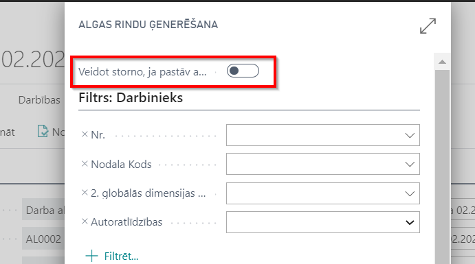

Storno saraksts
- Visiem darbiniekiem algu sarakstā vienāda kļūda algu aprēķinā:
1) algu saraksta rīkjoslā klikšķina uz pogām Darbības ( ) - Storno dokumenta ģenerēšana (
) - Storno dokumenta ģenerēšana ( );
);
2) izleks rindu ģenerēšanas logs, kur nepieciešamības gadījumā iespējams iestatīt filtrus.
3) tiks saģenerē storno sarakstu, kurā viss aprēķins viens pret vienu ir anulēts. Storno saraksts ir jāiegrāmato!;
4) veic datu labošanu un sagatavo jaunu algas aprēķinu. Pirmā algas saraksta maksājumu summa tiks iekļauta nākamajā aprēķinā kā atvilkums.
Pēc storno iegrāmatošanas algas saraksta cilnē Rindas stornētajiem ierakstiem tiks ielikta pazīme ( ), ka rindai ir labojums un attiecīgie darbinieku kodi iezīmēti sarkani (
), ka rindai ir labojums un attiecīgie darbinieku kodi iezīmēti sarkani ( ). Nospiežot uz pazīmi Rindai pastāv labojums (), atvērsies storno saraksts, kurā viss aprēķins viens pret vienu ir anulēts.
). Nospiežot uz pazīmi Rindai pastāv labojums (), atvērsies storno saraksts, kurā viss aprēķins viens pret vienu ir anulēts.

- Kļūda aprēķina algoritmā dēļ nepareizas nodokļa likmes, atvieglojuma apmēra utl.:
1) nomaina nodokļu, atvieglojumu utl. likmes;
2) izveido jaunu algu sarakstu, iepriekšējo sarakstu nestornējot un nelabojot;
3) klikšķina uz pogas Aprēķināt un rindu ģenerēšanas logā ieslēdz funkciju Veidot storno, ja pastāv aprēķins šajā mēnesī. Ja nepieciešams, filtrus izvēlas tādus pašus, kā algu sarakstā, kas jālabo;
4) sistēma sagatavos storno sarakstu, ko nepieciešams iegrāmatot. Pirmā algas saraksta maksājumu summa tiks iekļauta nākamajā aprēķinā kā atvilkums.

- Kļūda algas aprēķinā vienam vai vairākiem darbiniekiem:
1) algas saraksta cilnē Rindas iezīmē darbinieku (vai vairākus), kuriem nepieciešams labojums.
2) Rīkjoslā klikšķinot uz pogām Rinda () - Izveidot labojumu () rindiņa tiek atzīmēta kā labota .
3) Veic albojumus un sagatavo jaunu algu sarakstu, kur veic aprēķinu tikai labotam darbiniekam (vai vairākiem).

Tip
Ja sākotnējā algu saraksta izmaksa pirms storno saraksta veidošanas netika veikta (maksājums nav iegrāmatots), sistēma neatļaus eksportēt maksājumus, jo nākamajā algu sarakstā tiks ņemta vērā informācija par maksājumiem storno veidošanas brīdī.
Gadījumā, ja algas aprēķini ir stornēti, un jauns algas aprēķins šajā mēnesī nav izveidots, tiek atvērti visi šā mēneša ieraksti labošanai: komponenšu reģistros, prombūtnes reģistrā un uzskaitē.